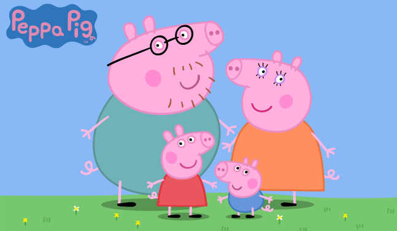

Мультфильмы на английском для детей. Уникальная подборка.
Какой ребёнок не любит мультфильмы?! А что, если приятное совмещать с полезным?
Мультфильмы для детей на английском языке – это прекрасная возможность домашнего обучения,
дополняющего основные занятия. Почему это эффективно и действительно работает?
Главное – это правильный подбор материала. Далеко не каждый мультфильм является обучающим.
Если, например, показать ребёнку «Шрека» с оригинальной озвучкой, пользы от этого будет не так уж и много.
В нём используются сложные выражения и фразеологизмы, а потому, для ознакомления с языком,
он будет фактически бесполезен. Обучающие мультфильмы на английском — какие они?
Качественные обучающие мультфильмы на английском языке для детей, как правило, разрабатываются по заказу
профессиональных школ и центров иностранного языка. В подобных анимационных картинах учитываются особенности
детского восприятия, способствуя образовательному процессу. Школа английского языка Moffy English School
также активно использует в своих занятиях мультфильмы на английском языке для детей. Они подготовлены и
сняты с участием компетентных преподавателей и ориентированы на разную степенью владения языком.
У таких мультфильмов много отличительных особенностей: - Специально разработанные для детей,
они не включают сложные предложения и непонятные слова. Используется базовая лексика, фразы звучат медленно,
а произношение всегда чёткое. - Обучающие английские мультфильмы для детей, как правило, являются многосерийными.
Это сделано специально для того, чтобы ребёнок привык к героям, к их манере говорить.
Большинство фраз и слов повторяется в разных сериях для закрепления материала и лучшего запоминания. -
Длительность каждой серии не превышает 10-20 минут, чтобы достичь максимальной фокусировки внимания.
- Безусловно, важно, чтобы сам анимационный фильм нравился ребёнку. В интернете также можно найти
множество мультфильмов на английском языке. Наши преподаватели просмотрели некоторые из них и
отобрали самые лучшие: Peppa Pig – всемирно известный мультсериал про свинку Пеппу, которая
так нравится юным зрителям. Teddy’s Train – образовательная программа от Oxford в формате весёлых,
занимательных песенок. Ben & Holly’s Little Kingdom – художественный мультфильм про волшебство
на простом и доступном английском. Max and Ruby – семейный мультипликационный сериал про
забавных кроликов и их родителей. Little Princess – небольшой сериал про чудесную принцессу-фею.
Отлично подходит для обучения языку. Если возникают сложности с пониманием, то можно использовать субтитры.
Оптимально для среднего уровня знаний языка. Gogo Loves English – этот обучающий мультфильм для детей на
английском языке подходит буквально всем начинающим. Забавный дракончик Гого научит вас новым словами и выражениям.
Каждая серия – это небольшой 5-минутный увлекательный сюжет.
Humf – это британский мультфильм с очень чётким произношением.
И хотя он не задумывался для обучения детей иностранному языку, все же может оказаться очень
полезным для прослушивания классического английского. Не подойдёт для начинающих. Magic English –
Компания Disney, как всегда, на высоте! Всем известные персонажи мультфильмов Disney обучают детей английскому.
Сериал представлен в виде коротких серий, каждая из которых затрагивает определённую тему изучения языка.
Подойдёт даже самым маленьким зрителям. Muzzy (Ма́ззи) – это мультипликационный курс создан компанией
BBC и представляет собой последовательные уроки английского языка, начиная с самого базового уровня.
Mickey Mouse Club House – Микки Маус и его друзья расскажут детям про окружающий мир и научат
решать математические задачки и головоломки. Выводы подборки: Мы указали перечень как художественных
мультфильмов на английском языке для детей, так и созданных при участии профессиональных педагогов с
целью обучения иностранному языку. Например, анимационный курс Muzzy состоит из 12 последовательных
уроков и помогает детям запоминать слова, строить фразы, уделяет внимание грамматике. Но какой бы
мультфильм на английском языке вы ни выбрали, нужно помнить главное правило: смотреть мультфильмы без субтитров на русском языке.